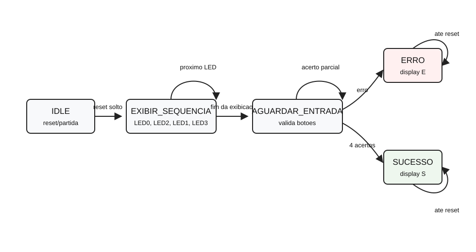
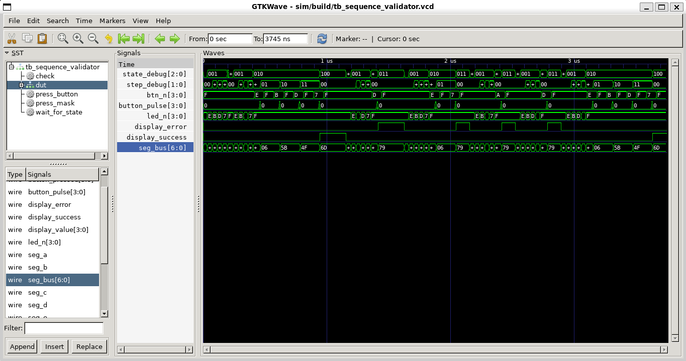
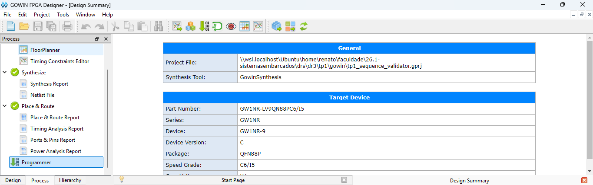
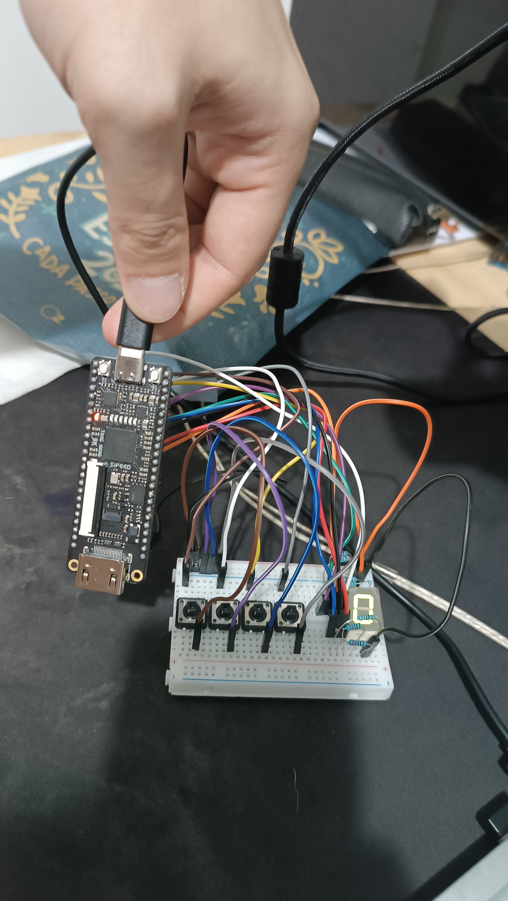
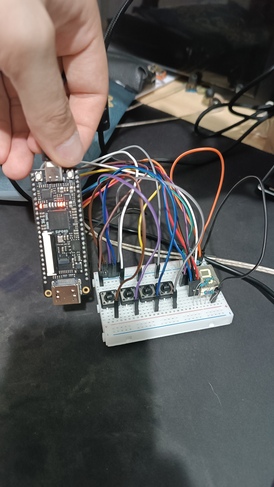
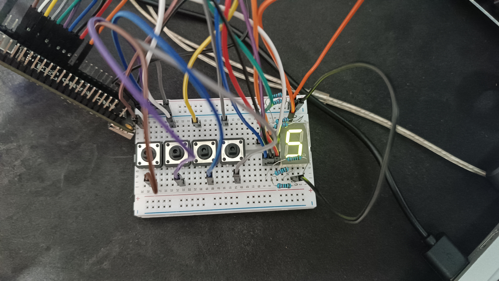
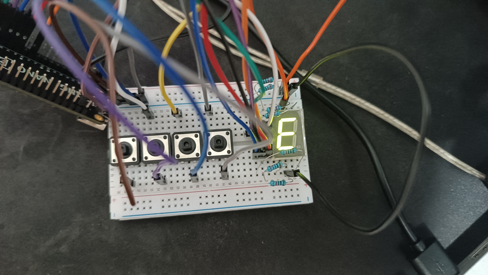

Sequência Validada
| Etapa | LED ativo | Entrada esperada |
|---|---|---|
| 1 | LED0 | Botão 0 |
| 2 | LED2 | Botão 2 |
| 3 | LED1 | Botão 1 |
| 4 | LED3 | Botão 3 |
Implementação em Verilog HDL para FPGA Tang Nano 9K, com validação por FSM, LEDs onboard, botões externos e display de sete segmentos.
O projeto implementa um sistema de validação de sequência operacional. A FPGA apresenta uma sequência fixa nos LEDs onboard, aguarda a reprodução correta por meio de quatro botões externos e sinaliza progresso, erro ou sucesso no display de sete segmentos.
| Etapa | LED ativo | Entrada esperada |
|---|---|---|
| 1 | LED0 | Botão 0 |
| 2 | LED2 | Botão 2 |
| 3 | LED1 | Botão 1 |
| 4 | LED3 | Botão 3 |
| Momento | Indicação |
|---|---|
| Exibição dos LEDs | 1, 2, 3 e 4 |
| Aguardando entrada | 0 e progresso |
| Sequência correta | S, visualmente parecido com 5 |
| Entrada incorreta | E |
Após os estados de erro ou sucesso, o sistema permanece travado até novo reset. Essa escolha torna o comportamento observável e evita reinicializações automáticas que poderiam dificultar a validação em hardware.
A FSM foi implementada com estados explícitos e lógica separada para atualização sequencial, cálculo de próximo estado e geração das saídas. O diagrama abaixo resume as transições principais.

| Estado | Responsabilidade | Saídas principais |
|---|---|---|
IDLE | Estado inicial após reset. | Display em 0, LEDs apagados. |
EXIBIR_SEQUENCIA | Mostra LED0, LED2, LED1 e LED3 por intervalo fixo. | Um LED onboard ativo por vez. |
AGUARDAR_ENTRADA | Valida os botões na ordem correta. | Display mostra progresso. |
ERRO | Captura entrada incorreta ou múltiplos botões. | Display mostra E. |
SUCESSO | Indica conclusão correta da sequência. | Display mostra S. |
O projeto foi dividido em módulos com responsabilidades bem definidas, mantendo a FSM isolada da filtragem dos botões e da codificação do display.
| Módulo | Função |
|---|---|
sequence_validator_top | Integra clock, reset, botões, FSM, LEDs e display de sete segmentos. |
sequence_fsm | Controla estados, temporização da apresentação dos LEDs, validação da sequência e sinais de erro/sucesso. |
button_conditioner | Sincroniza cada botão externo, aplica debounce parametrizável e gera pulso único de pressão. |
seven_segment_decoder | Converte progresso, erro e sucesso para segmentos A-G em display cátodo comum. |
| Sinal | Pino | Uso |
|---|---|---|
sys_clk | 52 | Clock onboard de 27 MHz. |
sys_rst_n | 4 | Reset pelo botão onboard S1, ativo em baixo. |
led_n[0] | 10 | LED0 onboard, ativo em baixo. |
led_n[1] | 11 | LED1 onboard, ativo em baixo. |
led_n[2] | 13 | LED2 onboard, ativo em baixo. |
led_n[3] | 14 | LED3 onboard, ativo em baixo. |
btn_n[0] | 25 | Botão externo 0. |
btn_n[1] | 26 | Botão externo 1. |
btn_n[2] | 27 | Botão externo 2. |
btn_n[3] | 28 | Botão externo 3. |
seg_a | 29 | Segmento A do display, com resistor em série. |
seg_b | 30 | Segmento B do display, com resistor em série. |
seg_c | 33 | Segmento C do display, com resistor em série. |
seg_d | 34 | Segmento D do display, com resistor em série. |
seg_e | 40 | Segmento E do display, com resistor em série. |
seg_f | 41 | Segmento F do display, com resistor em série. |
seg_g | 37 | Segmento G do display, com resistor em série. |
| Função | Protoboard | Observação |
|---|---|---|
| DP | g1 | Sem conexão. |
| C | g2 | Ligado ao segmento C. |
| COM | g3 | Ligado ao GND. |
| D | g4 | Ligado ao segmento D. |
| E | g5 | Ligado ao segmento E. |
| B | c1 | Ligado ao segmento B. |
| A | c2 | Ligado ao segmento A. |
| COM | c3 | Ligado ao GND. |
| F | c4 | Ligado ao segmento F. |
| G | c5 | Ligado ao segmento G. |
Os resistores de 330 ohms foram usados em série com cada segmento do display. A trilha negativa do protoboard foi usada como barramento de GND; a trilha positiva não foi utilizada.
| Sinal | Pino Tang | Protoboard |
|---|---|---|
| Botão 0 | 25 | a30 |
| Botão 1 | 26 | a25 |
| Botão 2 | 27 | a20 |
| Botão 3 | 28 | a15 |
| Segmento A | 29 | e8 |
| Segmento B | 30 | e9 |
| Segmento C | 33 | g8 |
| Segmento D | 34 | g7 |
| Segmento E | 40 | g6 |
| Segmento F | 41 | e7 |
| Segmento G | 37 | e6 |
| GND | GND | Trilha - |
| Item | Par no protoboard | Função |
|---|---|---|
| R_A | a2 - a8 | Segmento A |
| R_B | a1 - a9 | Segmento B |
| R_C | j2 - j8 | Segmento C |
| R_D | j4 - j7 | Segmento D |
| R_E | j5 - j6 | Segmento E |
| R_F | a4 - a7 | Segmento F |
| R_G | a5 - a6 | Segmento G |
| GND botão 0 | j28 - -28 | Diagonal do botão físico 1 |
| GND botão 1 | j23 - -23 | Diagonal do botão físico 2 |
| GND botão 2 | j18 - -18 | Diagonal do botão físico 3 |
| GND botão 3 | j13 - -13 | Diagonal do botão físico 4 |
| COM display | j3 - -3 | Comum em g3 |
| COM display | a3 - -3 | Comum em c3 |
O testbench executa cenários de sucesso, erro e reset. Para acelerar a validação, o módulo top é instanciado com temporizações reduzidas, mantendo a mesma lógica da implementação para hardware.
| Cenário | Critério verificado |
|---|---|
| Exibição da sequência | LED0, LED2, LED1 e LED3 na ordem especificada. |
| Caminho de sucesso | Entradas 0, 2, 1 e 3 levam ao estado SUCESSO. |
| Erro no início | Primeiro botão incorreto leva ao estado ERRO. |
| Erro no meio | Sequência parcialmente correta seguida de entrada errada leva a ERRO. |
| Botões simultâneos | Múltiplas entradas simultâneas levam a ERRO. |
| Reset | Estados finais permanecem travados até novo reset. |
mkdir -p sim/build iverilog -g2005-sv -o sim/build/tb_sequence_validator.vvp \ sim/tb_sequence_validator.v \ gowin/src/button_conditioner.v \ gowin/src/seven_segment_decoder.v \ gowin/src/sequence_fsm.v \ gowin/src/sequence_validator_top.v vvp sim/build/tb_sequence_validator.vvp

O projeto foi sintetizado no Gowin para a Tang Nano 9K e validado fisicamente com a montagem final no protoboard.





O vídeo de demonstração foi salvo no Google Drive e está disponível no link abaixo:
O sistema implementado atende à especificação do TP1. A FSM apresenta a sequência fixa nos LEDs, valida a entrada do operador, detecta erros imediatamente e sinaliza sucesso ou erro no display de sete segmentos. A implementação foi validada por testbench funcional, por síntese/Place&Route no Gowin e por execução física na Tang Nano 9K.